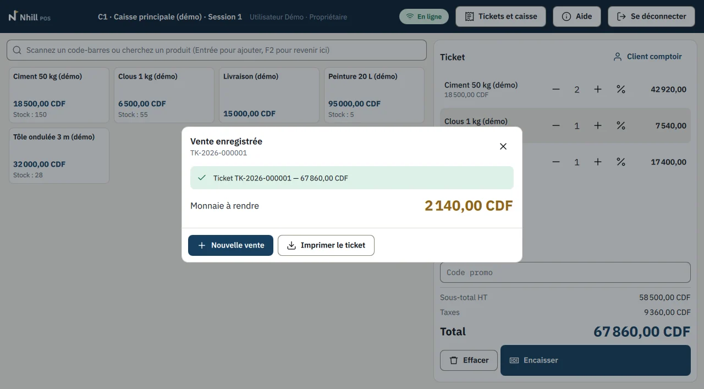
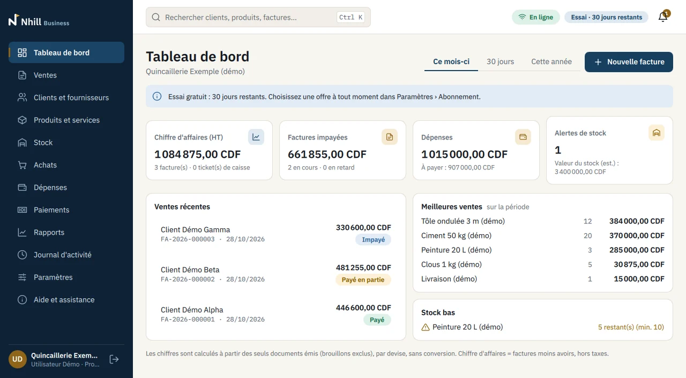
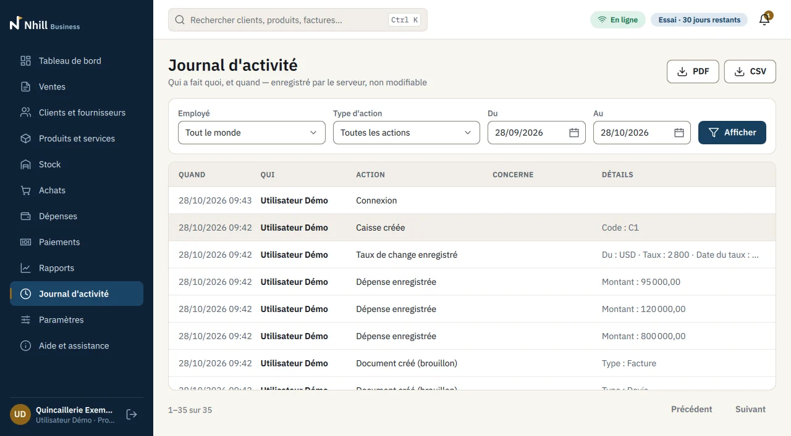

Vos ventes, votre stock et votre caisse, au clair.
Nhill est le logiciel de gestion et de caisse des indépendants, des commerces et des PME. Devis, factures, stock, caisse et paiements partagent les mêmes données : chaque vente porte le nom de la personne qui l'encaisse, le stock se met à jour tout seul, et vous voyez où en est votre argent, où que vous soyez.
Démonstration de 45 minutes sur vos propres produits, en visioconférence. Essai gratuit accompagné de 30 jours : mise en route et formation comprises.
- OuvertureFond de caisse50 000,00
- Vente3 articles TK-2026-00000167 860,00
- RetourAvoir AV-2026-000001−21 460,00
- ClôtureLe caissier compte son tiroir
- Espèces attendues
- 96 400,00
- Espèces comptées
- 95 900,00
- Écart
- −500,00
Pour les petites structures qui veulent y voir clair
Un seul logiciel, que vous travailliez seul ou avec une équipe, dans une boutique ou sur plusieurs sites.
Indépendants et solopreneurs
Vos devis et factures en PDF à votre nom, les paiements rattachés à chaque facture, vos dépenses notées au passage. Vous savez à tout moment qui vous doit quoi, dans la devise de chaque client.
Commerces et points de vente
Une caisse rapide pour le comptoir, un stock qui bouge avec chaque vente, et une clôture qui calcule l'écart. Chaque caissier a son accès et sa session.
PME et entreprises à plusieurs sites
Plusieurs dépôts, des rôles par employé, un journal d'activité que personne ne peut modifier, et des rapports pour la direction comme pour le comptable.
Ce que Nhill change dans votre journée
Quatre moments que connaissent toutes les petites entreprises, et ce qui se passe avec Nhill.
Le soir, le cahier de caisse ne tombe pas juste, et personne ne sait d'où vient la différence.
Chaque vente porte le nom du caissier. À la clôture, Nhill calcule les espèces attendues et enregistre l'écart. Vous savez quelle session, quel jour, quelle personne.
La rupture de stock se découvre devant le client.
Le stock bouge avec chaque vente et chaque achat reçu. Une alerte signale les produits qui passent sous leur seuil, dépôt par dépôt.
Les crédits clients se suivent de mémoire ou dans un carnet.
Chaque facture garde son solde. Vous voyez ce que chaque client vous doit, dans la devise de sa facture, et les paiements partiels se rattachent à la bonne facture.
Impossible de s'absenter sans perdre le fil du magasin.
Vous suivez tout à distance. Tableau de bord, ventes par employé et journal d'activité, depuis votre ordinateur ou votre téléphone Android.
Deux applications, un seul compte
La caisse au comptoir, la gestion au bureau ou en déplacement. Les deux partagent les mêmes produits, les mêmes clients, le même stock et les mêmes modèles de documents.

Au comptoir
Nhill POS, pour vendre vite
- Ventes au toucher ou au lecteur de codes-barres, monnaie à rendre calculée.
- Plusieurs moyens de paiement sur une même vente : espèces, carte, Mobile Money, virement, chèque.
- Un ticket, ou une facture A4 au nom du client, identique à celle du bureau.
- Remises au-delà du plafond, retours et annulations validés par un responsable.

Au bureau et en déplacement
Nhill Business, pour gérer
- Devis, commandes, factures et avoirs en PDF, à votre nom et avec votre logo.
- Stock par dépôt, achats fournisseurs, dépenses avec justificatifs.
- Clients, fournisseurs, paiements reçus et versés.
- Rapports pour vous et pour votre comptable, en PDF ou en CSV.
Gardez le contrôle, même absent
Chaque employé a son propre accès et un rôle adapté : caissier, vendeur, comptable, gérant. Une remise trop forte ou une annulation demande l'accord d'un responsable.
Le journal d'activité montre qui a créé, encaissé, remis ou annulé quoi, et quand. Personne ne peut le modifier.

Votre commerce dans votre poche
Nhill Business fonctionne aussi sur téléphone et tablette Android. Le chiffre du jour, les factures impayées, les alertes de stock : vous les consultez où que vous soyez, et vous pouvez faire une facture sur place chez un client, puis l'envoyer par e-mail ou par messagerie.
Ce que vous saisissez sur le téléphone est aussitôt visible au bureau, et inversement : les deux travaillent sur les mêmes clients, les mêmes produits et le même stock.

Pensé pour vendre partout, dans plusieurs devises
Nhill suit la façon dont les petites entreprises travaillent vraiment : des clients qui paient de plusieurs façons, parfois dans plusieurs monnaies, au comptoir comme en déplacement.
- 36 devises, des montants exacts
- Chaque document a sa devise : dollar, euro, livre sterling, franc suisse, francs CFA, franc congolais, naira, shilling kényan, dirham, rand et d'autres. Les montants sont calculés exactement, le taux du jour est enregistré avec le document, et vos totaux restent présentés devise par devise.
- Français et anglais
- Interface, factures, tickets et rapports dans la langue de chaque utilisateur.
- Une connexion mobile suffit
- Vos données sont enregistrées en temps réel sur un serveur sécurisé. Si le réseau coupe pendant une vente, vous la validez de nouveau : elle n'est jamais comptée deux fois.
- Tous vos moyens de paiement
- Espèces, carte, virement, chèque, Mobile Money : sur le même ticket ou la même facture, avec leur référence.
- Un accompagnement humain
- Démonstration et formation en visioconférence, où que vous soyez ; à Kinshasa, nous pouvons aussi installer Nhill et former votre équipe sur place.
- Vos données restent les vôtres
- Chaque établissement est séparé des autres, les échanges sont chiffrés, les données sont hébergées en France, et vous exportez tout quand vous voulez.
Tout ce qu'il faut pour vendre et gérer, prêt dès le premier jour
Un ERP modulaire comme Odoo s'assemble application par application. Nhill réunit d'emblée les outils qu'une petite entreprise utilise chaque jour, déjà reliés entre eux, avec un accompagnement pour démarrer.
| Ce qui compte pour vous | Avec Nhill | Avec un ERP modulaire (par exemple Odoo) |
|---|---|---|
| Démarrer | Une demi-journée environ : démonstration sur vos produits, import de votre catalogue et formation, compris dans l'essai accompagné | Choix des applications puis paramétrage, par vous-même ou avec un partenaire intégrateur |
| Vos outils du quotidien | Ventes, caisse, stock, achats, dépenses et paiements réunis et reliés dès l'ouverture du compte | Applications à sélectionner et à configurer selon vos besoins |
| Votre abonnement | Un abonnement par établissement, avec vos utilisateurs, vos caisses et vos dépôts inclus selon la formule | Une licence par utilisateur et par mois |
| Votre caisse | Nhill POS fait partie de la solution : comptage à l'aveugle, écart enregistré, accord d'un responsable pour les remises et les annulations | Application de caisse à ajouter et à paramétrer |
| Votre accompagnement | Une équipe qui vous suit de la démonstration aux premières semaines d'utilisation | Support de l'éditeur ou du partenaire, selon le contrat choisi |
Odoo est une marque d'Odoo S.A., sans lien avec Nhill. Informations tirées de sources publiques consultées en octobre 2026.
Démarrer, en quatre étapes
Nous vous accompagnons du premier échange jusqu'aux premières semaines d'utilisation.
La démonstration
45 minutes, sur vos propres produits, en visioconférence.
L'installation
Sur vos ordinateurs et téléphones, avec l'import de votre catalogue.
La formation
Chaque personne apprend les gestes de son rôle : caisse, factures, stock.
Le suivi
Un point chaque semaine pendant l'essai, et une assistance joignable.
Voyez Nhill sur vos propres produits.
Dites-nous ce que vous vendez et comment vous travaillez : nous vous montrons Nhill sur votre cas, puis vous décidez si vous voulez l'essayer gratuitement.
Places limitées pour l'essai accompagné : nous suivons un petit nombre d'entreprises à la fois.